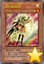
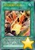
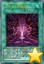
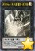
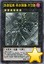
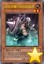
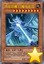
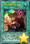
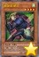

以下是可以在118.178.111.167 23333端口使用的先行卡的列表。下载补丁后即可使用。
使用方法：原版游戏下载补丁后解压至游戏文件夹，YGOMobile请自定义数据库（方法请查看压缩包内使用说明），暂不保证对其他版本的支持。
资料来源：任天堂世界论坛。
脚本作者：ygopro-pre-script，YGOPRO。目前所有脚本来自于以上这2个项目，在此对各自的贡献者表示感谢。
版权声明：转载请注明出自本页面，并完整保留附带的使用说明文档。如果您想对本项目进行修改，请移步这里，但我们建议您直接参与官方项目ygopro-pre-script。
星星和加号图标是Yusuke Kamiyamane的作品。
更新记录
- 2017-02-03 23:47
- 新卡：RATE-EN(TCG911)新卡7张。
- 更新：优化部分卡图。
- 修复：秘谍女郎 雾女郎效果无法发动的问题。
- 2017-01-25 19:18
- 新卡：忒修斯海怪、秘谍女郎 米丝蒂、上千主上的契约。
- 更新：删除已经正式更新的卡。
- 更新：优化部分卡图。
- 2017-01-21 17:33
- 新卡：净化施效者、相互碰撞的灵魂、未来No.0 未来皇 霍普-未来斩、急袭猛禽-革命猎鹰-大空袭。
- 2017-01-21 02:38
- 修复：更新疾行机人 磁铁恶魔的处理，修复可以任意作为同调素材等问题。
- 2017-01-20 22:52
- 修复：爆竹鬼伤害数值错误的问题。
- 修复：十二兽的相克代替取除素材时报错的问题。
- 2017-01-20 00:54
- 更新：新字段更新为正式版。
- 更新：更新智天之神星龙额外灵摆召唤过程。
- 2017-01-19 18:30
- 修复：霸王龙 扎克灵摆效果应只限制场上的发动。
- 2017-01-19 18:08
- 修复：舞台旋转盖放的卡全部发动后仍不能发动其他场地魔法的问题。
- 2017-01-19 18:00
- 修复：古代的机械巨人-究极重击遗言效果无效的问题。
- 2017-01-19 17:52
- 修复：灰流丽不能无效明亮融合的问题。但暂时存在能无效明亮融合②效果的问题。
- 修复：幻影骑士团 失落护臂甲能以里侧表示怪兽为对象的问题。
- 2017-01-19 17:41
- 修复：杰作拼图不能超量召唤的问题。
- 修复：爆竹鬼结束阶段效果应为强制发动。
- 修复：灰流丽应能连锁自己发动的效果发动。
- 修复：急袭猛禽-异邦猎鹰遗言效果不取对象的问题。
- 修复：十二兽的相克代替素材效果无效的问题。
- 修复：幻煌龙的天涡装备怪兽转移控制权的场合仍能触发胜利效果的问题。
- 2017-01-15 21:46
- 新卡：杰作拼图。
- 更新：十二兽和真龙等部分卡增加提示。
- 2017-01-15 21:16
- 修复：失落世界不能成功代替战斗破坏的问题。
- 2017-01-15 20:55
- 修复：幻影骑士团 失落护臂甲防止战斗破坏效果无效的问题，和可以攻击表示特殊召唤的问题。
- 2017-01-15 20:18
- 修复：灰流丽不能无效摇晃的目光的问题。
- 2017-01-15 20:05
- 修复：十二兽 猴槌特殊召唤的怪兽可以作为超量素材的问题。
- 修复：十二兽 狗环对方回合结束阶段不会取除超量素材的问题。
- 2017-01-15 11:22
- 修复：食魂窃蛋龙被卡时点的问题。
- 2017-01-15 11:19
- 修复：抒情歌鸲-青玉燕超量素材效果不受王家长眠之谷影响的问题。
- 修复：霸王门 无限能以攻击力为0的怪兽为对象发动灵摆效果的问题。
- 修复：根据调整，超越融合应不能特殊召唤不再满足条件的融合素材（如凶饿毒融合龙的素材）。
- 2017-01-15 11:10
- 修复：小翼龙不在场上被破坏不能发动效果的问题。
- 2017-01-15 11:03
- 修复：失落世界报错的问题。
- 修复：疾行机人 磁铁恶魔报错的问题。（可以任意作为同调素材的问题待修复。）
- 2017-01-15 10:47
- 修复：灰流丽不能无效抽卡效果和暴走魔法阵和邻家割草等卡的问题。
- 2017-01-15 01:55
- 新卡：MACR(912)全部新卡，SR04，VJMP等新卡25张。
- 更新：优化部分卡图。
- 2017-01-11 18:42
- 修复：真龙拳士 雾动轰·铁拳不能把卡发动的问题。
- 2017-01-11 13:42
- 新卡：狒狒面包树。
- 修复：娱乐伙伴 天空魔术家和幻煌之都 帕西菲斯的处理。
- 修复：真龙皇 法·王·兽改为只限制怪兽效果的发动。
- 修复：真龙下级改为不能在伤害步骤触发效果。
- 2017-01-09 14:10
- 新卡：娱乐决斗、融合回收工厂。
- 更新：旧卡的新字段等数据。
- 2017-01-02 23:16
- 修复：真龙的继承抽卡数量应统计双方送去墓地的数量。
- 2016-12-31 20:23
- 修复：娱乐伙伴 天空魔术家上升攻击力被无效后不重置的问题。
- 修复：抒情歌鸲-独立夜莺攻击力上升的处理。
- 修复：真龙凰的使徒①效果处理时不在场上存在也可以处理的问题，和对象卡不在墓地也会被返回卡组的问题。
- 2016-12-30 19:07
- 修复：真龙战士 点火烈·炽热和真龙拳士 雾动轰·铁拳在场上没有格子时也能选择把卡发动的问题。
- 修复：抒情歌鸲-独立夜莺不识别抒情歌鸲-吟诵椋鸟的问题。
- 2016-12-29 23:44
- 新卡：抒情歌鸲-独立夜莺、灵摆多福鸟、十二兽 鸡拳。
- 修复：魔术师的左手和右手没有把效果无效也会把卡破坏的问题。
- 修复：真龙的默示录①效果不能在伤害步骤发动的问题。
- 2016-12-28 09:46
- 修复：真龙怪兽在没有怪兽可解放的场合不能使用其他卡的效果解放魔陷上级召唤的问题。
- 修复：真龙的默示录发动次数与真龙皇的复活冲突的问题。
- 2016-12-28 01:02
- 新卡：真龙剑皇 卓辉星·拼图、真龙凰的使徒、真龙的默示录。
- 更新：真龙怪兽应能解放里侧表示的永续魔法·陷阱卡上级召唤。
- 修复：霸王龙 扎克部分场合不能使用异色眼融合融合召唤的问题。
- 2016-12-26 18:16
- 更新：部分卡涉及王家长眠之谷的处理。
- 修复：娱乐伙伴 U合石人无法使用的问题。
- 修复：决斗者降临无法检索灵摆融合的问题。
- 2016-12-26 12:49
- 修复：娱乐伙伴 U合石人不能把墓地的卡加入手卡的问题，和不能使用连锁素材融合的问题。
- 修复：幻影骑士团 诅咒标枪效果可以在伤害步骤伤害计算后发动的问题。
- 修复：雾动机龙咆哮灵摆召唤限制只持续1回合的问题。
- 2016-12-25 21:59
- 新卡：巨大要塞 泽洛斯、娱乐伙伴 U合石人、幻影骑士团 诅咒标枪、神数的星战、雾动机龙咆哮。
- 更新：优化部分卡图。
- 2016-12-25 14:56
- 修复：更新部分融合卡的处理。
- 2016-12-25 13:51
- 更新：删除已经正式更新的卡。
- 2016-12-24 10:23
- 修复：真龙的继承抽卡数量错误的问题。
- 2016-12-24 10:13
- 修复：部分场合自己发动魔法·陷阱卡的效果的场合也会触发幻煌之都 帕西菲斯②效果的问题。
- 2016-12-23 20:12
- 修复：宙读之魔术士不能选择破坏怪兽的同名卡加入手卡的问题。
- 2016-12-23 09:42
- 更新：根据调整，宙读之魔术士应只能选择墓地·额外卡组表侧表示·除外的怪兽的同名卡加入手卡。
- 更新：根据调整，虹彩之魔术师应不能在不能进入战斗阶段的场合发动灵摆效果。
- 更新：根据调整，时空之灵摆读阵没有把2张卡破坏时，应能选任意卡试图送去墓地。
- 2016-12-22 11:18
- 修复：疾行机人 56飞机只能选自己怪兽下降攻击力的问题。
- 2016-12-22 11:11
- 修复：白翼之魔术师灵摆效果选择不使用后不能再次使用的问题。
- 修复：幻煌之都 帕西菲斯在部分场合可以在已经特殊召唤了衍生物的场合发动②效果的问题。
- 2016-12-21 18:00
- 新卡：娱乐伙伴 小判龙、影灵衣巫女 艾莉娅儿。
- 修复：真龙骑将 得律阿斯3世会使魔法·陷阱卡也不能成为对象和破坏的问题。
- 修复：流星音击在不能进行战斗阶段的回合也能发动的问题。
- 2016-12-21 00:01
- 更新：优化部分卡图。
- 修复：试图融合霸王龙 扎克时可能崩溃的问题。
- 修复：急袭猛禽-异邦猎鹰种族错误的问题。
- 2016-12-20 11:26
- 修复：双头共鸣者墓地效果无效的问题。
- 2016-12-19 22:45
- 更新：霸王龙 扎克的处理。
- 修复：新卡列表中缺少的卡。
- 2016-12-19 22:29
- 更新：优化部分卡图。
- 修复：霸王龙 扎克的处理回退到上一个版本。
- 修复：同调呼唤的处理。
- 2016-12-19 14:47
- 修复：双头共鸣者①效果无效的问题。
- 2016-12-18 23:43
- 修复：天轮之双星道士特殊召唤的怪兽应为守备表示。
- 修复：白之衣在自己的所有怪兽攻击时都会发动效果的问题。
- 2016-12-18 23:25
- 新卡：诀别、双头共鸣者、宇宙耀变龙、急袭猛禽-异邦猎鹰。
- 2016-12-18 11:29
- 修复：真龙骑将 得律阿斯3世离场效果不能在伤害步骤发动的问题。
- 2016-12-18 11:26
- 修复：破坏龙 甘多拉-烈光闪不识别自身为甘多拉卡的问题。
- 修复：霸王门 零伤害变0效果无效的问题。
- 更新：同调呼唤的处理。
- 更新：霸王龙 扎克的处理。
- 2016-12-18 01:37
- 更新：优化部分卡图。
- 修复：真龙骑将 得律阿斯3世不识别旧「真龙」卡的问题。
- 修复：幽丽的幻泷发动提示问号的问题，和二效果无法使用的问题。
- 2016-12-17 19:48
- 新卡：PP19新卡5张，MACR新卡5张。
- 更新：优化部分卡图。
- 修复：霸王龙 扎克无法作为灵摆刻度灵摆召唤的问题。
- 修复：灵摆融合无法使用灵摆区素材融合始祖龙 古龙和凶饿毒融合龙的问题。
- 2016-12-17 17:47
- 修复：更新霸王龙 扎克的融合过程，尝试修复奇迹同调融合等卡出错的问题。
- 2016-12-17 14:54
- 修复：白之衣离场没有伤害的问题。
- 2016-12-17 14:34
- 修复：霸王龙 扎克可以用异色眼融合从额外卡组使用4个素材融合召唤的问题。
- 2016-12-17 14:07
- 修复：霸王门 无限特殊召唤的怪兽不能正常使用的问题。
- 2016-12-16 17:47
- 修复：幻煌龙的浸涡墓地效果无效的问题。
- 2016-12-16 16:45
- 新卡：白之衣。
- 更新：迪亚邦德之核上升攻击力应为600。
- 更新：优化部分卡图。
- 2016-12-16 15:45
- 修复：宙读之魔术士和刻读之魔术士不识别旧卡的「超量龙」「同调龙」「融合龙」字段的问题。
- 2016-12-16 15:07
- 修复：霸王眷龙 暗黑亚龙灵摆效果发动后不能特殊召唤其他属性怪兽的问题。
- 修复：更新霸王龙 扎克的融合过程，修复不能奇迹同调融合的问题。
- 2016-12-16 12:57
- 修复：幻煌之都 帕西菲斯衍生物效果无法发动的问题。
- 2016-12-16 12:36
- 修复：幻煌之都 帕西菲斯通常召唤和特殊召唤成功时可以各自发动一次效果的问题。
- 2016-12-16 11:30
- 修复：幻煌龙的战涡墓地效果无效的问题。
- 修复：流星音击不存在于墓地时也能代替解放的问题。
- 2016-12-16 09:36
- 修复：幻煌之都 帕西菲斯未被当作「海」的问题。
- 2016-12-16 09:18
- 修复：流星音击无法使用的问题。
- 修复：幻煌之都 帕西菲斯②效果发动时点错误的问题。
- 修复：幻煌龙的浸涡应为取对方场上怪兽为对象，修复墓地效果无效的问题。
- 2016-12-16 00:34
- 新卡：VJMP公布新卡共14张。
- 2016-12-12 11:58
- 修复：娱乐伙伴 机炮食尸鬼融合素材错误的问题。
- 2016-12-11 21:00
- 新卡：娱乐伙伴 机炮食尸鬼。
- 2016-12-10 19:30
- 修复：娱乐伙伴 天空魔术家发动的提示显示为问号的问题。
- 2016-12-10 13:47
- 修复：破坏龙 甘多拉-烈光闪效果无法使用的问题。
- 修复：娱乐伙伴 凶猛蔷薇怪兽效果无法使用的问题。
- 修复：宙读之魔术士在自己场上以外的卡被破坏时也能发动效果的问题。
- 2016-12-09 23:46
- 新卡：破坏龙 甘多拉-烈光闪、娱乐伙伴 歌谣蔷薇、娱乐伙伴 凶猛蔷薇、魔玩具·冒失鬼。
- 2016-12-07 13:11
- 修复：抒情歌鸲-吟诵椋鸟未被识别为抒情歌鸲卡的问题。
- 2016-12-05 23:44
- 更新：删除已经正式更新的卡。
- 修复：白翼之魔术师字段错误。
- 2016-12-02 16:14
- 修复：魔术师的再演②效果无效的问题。
- 2016-12-01 22:42
- 新卡：摩天一击、娱乐伙伴、DDD、魔术师等新卡共10张。
- 修复：迪亚邦德之核效果能多次发动的问题。
- 修复：真龙皇 法·王·兽会使不受效果影响的怪兽也不能发动效果的问题。
卡片列表
| 卡图 | 卡名 | 效果 |
|---|---|---|
 | 宇宙耀变龙 | [怪兽|效果|同调] 龙/风 [★12] 4000/4000 同调怪兽调整＋调整以外的同调怪兽2只以上 这张卡不用同调召唤不能特殊召唤。 ①：可以把场上的这张卡直到结束阶段除外从以下效果选择1个发动。 ●对方把魔法·陷阱·怪兽的效果发动时才能发动。那个发动无效并破坏。 ●对方把怪兽召唤·反转召唤·特殊召唤之际才能发动。那个无效，那些怪兽破坏。 ●对方怪兽的攻击宣言时才能发动。那次攻击无效，那之后战斗阶段结束。 |
|  | 净化施效者 | [怪兽|效果] 魔法师/光 [★2] 0/900 ①：这张卡作为同调素材送去墓地的场合发动。自己从卡组抽1张。 ②：这张卡为同调素材的同调怪兽不会被效果破坏。 |
 | 流星音击 | [魔法|速攻] ①：以自己场上1只「星尘」同调怪兽为对象才能发动。这个回合，那只自己的同调怪兽和对方怪兽进行战斗的场合，伤害步骤开始时那只对方怪兽回到持有者卡组。 ②：自己场上的「星尘」同调怪兽为让效果发动而把自身解放的场合，可以作为代替把墓地的这张卡除外。 |
|  | 相互碰撞的灵魂 | [魔法|速攻] ①：自己的攻击表示怪兽和比那只怪兽攻击力高的对方的攻击表示怪兽进行战斗的伤害计算时才能发动。那些进行战斗的怪兽之内攻击力低的怪兽的控制者可以支付500基本分让那只怪兽的攻击力只在伤害计算时上升500。那之后，直到变成双方不支付基本分为止让这个效果重复。那次战斗发生的双方的战斗伤害变成0，伤害计算后那次战斗让怪兽被破坏的玩家的场上的卡全部送去墓地。 |
 | 弯月罩 | [魔法|速攻] ①：怪兽的攻击无效时，可以从以下效果选择1个发动。 ●变成这个回合的结束阶段。 ●以自己场上1只「希望皇 霍普」超量怪兽为对象才能发动。那只怪兽的攻击力直到回合结束时变成原本攻击力的2倍。 ②：自己场上的「希望皇 霍普」超量怪兽把超量素材1个取除来让效果发动的场合，可以作为取除的超量素材的代替而把墓地的这张卡除外。 |
| 杰作拼图 | [陷阱] ①：以自己墓地2只怪兽为对象才能发动。那2只怪兽效果无效特殊召唤，只用那2只为素材把1只光属性「霍普」超量怪兽超量召唤。 | |
|  | 上千主上的契约 | [魔法|永续] 「上千主上的契约」在1回合只能发动1张。 ①：作为这张卡的发动时的效果处理，双方玩家失去1000基本分，各自从卡组抽1张。 ②：双方玩家把这张卡在魔法与陷阱区域存在期间抽到的卡以及这张卡的①的效果抽到的卡持续公开。 ③：这张卡的效果让手卡的魔法卡公开中的玩家不能把怪兽通常召唤。 |
 | 螺旋之强袭炸裂 | [魔法] ①：可以从以下效果选择1个发动。 ●自己场上有「异色眼」卡存在的场合，以场上1张卡为对象才能发动。那张卡破坏。 ●从卡组的怪兽以及自己的额外卡组的表侧表示的灵摆怪兽之中选1只7星「异色眼」怪兽加入手卡。 |
 | 娱乐决斗 | [魔法|场地] ①：只要这张卡在场地区域存在，双方玩家每次在1回合中各把以下条件满足，每1个条件在1回合各有1次从卡组抽2张。 ●把等级不同的怪兽5只同时特殊召唤。 ●自身1只怪兽进行5次战斗。 ●连锁5以上把卡的效果发动。 ●掷骰子的次数以及投掷硬币的次数变成合计5次。 ●受到让自身基本分变成500以下的伤害。 |
|  | 未来No.0 未来皇 霍普-未来斩 | [怪兽|效果|超量] 战士/光 [☆1] 0/0 「No.」怪兽以外的相同阶级的超量怪兽×2 规则上，这张卡的阶级当作1阶使用。这张卡也能在自己场上的「希望皇 霍普」怪兽或者「未来No.0 未来皇 霍普」上面重叠来超量召唤。 ①：这张卡的攻击力上升双方墓地的「No.」超量怪兽数量×500。 ②：这张卡不会被战斗破坏。 ③：1回合1次，把这张卡1个超量素材取除才能发动。这个回合，这张卡在同1次的战斗阶段中可以作2次攻击。 |
|  | 急袭猛禽-革命猎鹰-大空袭 | [怪兽|效果|超量] 鸟兽/暗 [☆6] 2000/3000 鸟兽族6星怪兽×3 这张卡也能把手卡1张「升阶魔法」魔法卡丢弃，在自己场上的5阶以下的「急袭猛禽」超量怪兽上面重叠来超量召唤。 ①：这张卡超量召唤成功的场合，以对方场上1只怪兽为对象才能发动。那只怪兽破坏，给与对方那个攻击力数值的伤害。 ②：这张卡被对方破坏送去墓地的场合才能发动。从额外卡组把1只「急袭猛禽-革命猎鹰」特殊召唤，把这张卡在下面重叠作为超量素材。 |
 | 小翼龙 | [怪兽|效果] 恐龙/地 [★2] 500/500 ①：这张卡被效果破坏送去墓地的场合发动。从卡组把1只4星以上的恐龙族怪兽特殊召唤。这个效果特殊召唤的怪兽在这个回合不能攻击。 |
 | 究极传导恐兽 | [怪兽|效果] 恐龙/光 [★10] 3500/3200 这张卡不能通常召唤。把自己墓地2只恐龙族怪兽除外的场合可以特殊召唤。 ①：1回合1次，自己·对方的主要阶段才能发动。选自己的手卡·场上1只怪兽破坏，对方场上的表侧表示怪兽全部变成里侧守备表示。 ②：这张卡可以向对方怪兽全部各作1次攻击。 ③：这张卡向守备表示怪兽攻击的伤害步骤开始时才能发动。给与对方1000伤害，那只守备表示怪兽送去墓地。 |
 | 食魂窃蛋龙 | [怪兽|效果] 恐龙/暗 [★4] 1800/500 「食魂窃蛋龙」的①②的效果1回合各能使用1次。 ①：这张卡召唤·特殊召唤成功的场合才能发动。从卡组选1只恐龙族怪兽加入手卡或送去墓地。 ②：以这张卡以外的场上1只4星以下的恐龙族怪兽为对象才能发动。那只怪兽破坏。那之后，从自己墓地选1只恐龙族怪兽守备表示特殊召唤。 |
 | 失落世界 | [魔法|场地] ①：恐龙族以外的场上的怪兽的攻击力·守备力下降500。 ②：1回合1次，恐龙族怪兽召唤·特殊召唤的场合才能发动。在对方场上把1只「侏罗蛋衍生物」（恐龙族·地·1星·攻/守0）守备表示特殊召唤。 ③：只要对方场上有衍生物，对方不能把衍生物以外的场上的怪兽作为效果的对象。 ④：1回合1次，场上的通常怪兽被战斗·效果破坏的场合，可以作为代替把那个数量的自己的手卡·卡组的恐龙族怪兽破坏。 |
 | 生存境界 | [陷阱] ①：场上的通常怪兽全部破坏，把最多有破坏数量的4星以下的恐龙族怪兽从卡组往自己场上特殊召唤。这个效果特殊召唤的怪兽在结束阶段破坏。 ②：把墓地的这张卡除外，以自己场上1只恐龙族怪兽和对方场上1张卡为对象才能发动。那些卡破坏。 |
 | 融合回收工厂 | [魔法|场地] 1回合1次：可以丢弃1张手卡；从自己的卡组或者墓地把1张「融合」加入手卡。1回合1次，在结束阶段时：可以选择作为这个回合融合召唤使用过的融合素材的自己墓地1只怪兽；那只怪兽加入手卡。 |
| 忒修斯海怪 | [怪兽|融合|调整] 不死/水 [★5] 2200/1800 调整×2 | |
|  | 地底恐魔的宿敌防御者 | [怪兽|效果] 兽战士/地 [★2] 100/2000 在自己或者对方回合，只以自己场上的盖放的怪兽1只为对象的对方的魔法·陷阱·怪兽的效果发动时或者自己的盖放的怪兽被选择作为对方怪兽的攻击对象时：可以把自己的手卡或者场上表侧表示的这张卡送去墓地，之后选择自己场上1只作为正确对象的其他怪兽；那个卡/效果/攻击对象转移为新的对象。只要自己场上有盖放的怪兽存在，这张卡不会被战斗或者卡的效果破坏。 |
 | 地底恐魔 巨魔龙骨 | [怪兽|效果|反转] 不死/地 [★6] 2400/1600 反转：可以发动这个效果；这个回合，自己场上的「地底恐魔」卡不会被对方的卡的效果破坏。「地底恐魔 巨魔龙骨」的这个效果1回合只能使用1次。 自己场上的表侧表示怪兽变成里侧表示时，自己场上没有表侧表示怪兽存在的场合：可以从手卡把这张卡守备表示特殊召唤。1回合1次：可以把这张卡变成里侧守备表示。 |
|  | 地底恐魔 巨魔地电流 | [怪兽|效果|反转] 雷/地 [★9] 1900/3000 反转：可以选择对方场上1只盖放的怪兽；直到下次的自己结束阶段得到那只怪兽的控制权。「地底恐魔 巨魔地电流」的这个效果1回合只能使用1次。 自己场上的表侧表示怪兽变成里侧表示时，自己场上没有表侧表示怪兽存在的场合：可以从手卡把这张卡守备表示特殊召唤。1回合1次：可以把这张卡变成里侧守备表示。 |
|  | 地底恐魔洞窟冲突 | [魔法|永续] 自己场上的「地底恐魔」怪兽的攻击力·守备力上升场上盖放的怪兽数量×500。1回合1次，自己的「地底恐魔」怪兽给与对方战斗伤害时：可以选择「地底恐魔洞窟冲突」以外的自己墓地1张「地底恐魔」卡；那张卡加入手卡。 （注：译名暂未确定） |
| 秘谍女郎 雾女郎 | [怪兽|效果] 魔法师/暗 [★4] 1500/1600 这张卡召唤·特殊召唤成功的场合：可以宣言卡的种类（怪兽·魔法·陷阱）；对方卡组最上面的卡翻开，翻开的卡是宣言的种类的卡的场合从卡组抽1张卡。1回合1次，在自己或者对方回合：可以选择自己场上1只「秘旋谍 超级特工」和对方场上1只怪兽；那些怪兽回到持有者手卡。 （注：译名暂未确定） | |
|  | 秘旋谍 硬汉 | [怪兽|效果] 战士/风 [★4] 1900/1500 这张卡的卡名只要在场上·墓地存在当作「秘旋谍 超级特工」使用。1回合1次：可以宣言卡的种类（怪兽·魔法·陷阱）并选择对方场上1张卡；对方卡组最上面的卡翻开，翻开的卡是宣言的种类的卡的场合破坏选择的卡。 |
| 秘旋谍装备 - 万能绳索 | [陷阱] 自己场上有「秘旋谍 超级特工」存在的场合：选择对方场上1张表侧表示的卡；那张卡回到持有者卡组最上面。「秘旋谍装备 - 万能绳索」在1回合只能发动1张。 （注：译名暂未确定） | |
| 秘旋谍任务 - 夺回 | [陷阱|永续] 这张卡在发动后第3次的自己的结束阶段时破坏。1回合1次，自己场上有「秘旋谍」怪兽特殊召唤的场合（伤害步骤以外）：可以选择对方场上1只怪兽；直到结束阶段得到那只怪兽的控制权，这个效果得到控制权的怪兽在这个回合不能直接攻击。自己场上的「秘旋谍」怪兽被战斗或者卡的效果破坏的场合，可以作为那1只破坏的「秘旋谍」怪兽的代替而把墓地的这张卡除外。 |
常见问题
Q.某张卡有BUG！
A.请到页面下方留言反馈，或联系233服QQ群里的尸体233（QQ：921439818）。
Q.卡片右下角的黄色星星是什么意思？
A.表示那张卡暂未有实卡，是先行卡。其卡片密码暂时使用临时密码（1开头的9位数）。
这种卡需要在23333端口才能使用。此外部分使用同样密码体系的服务器（不包括Checkmate）也可以使用。
实卡发售后，对应的带星星的先行卡会失效，请更新游戏，来获取正式的版本。
Q.卡片右下角的绿色加号是什么意思？
A.表示那张卡已有实卡但YGOPRO的国内官方版本暂未更新，是本补丁增加的卡片。其卡片密码是正式密码。
这种卡在233端口更新前只能在23333端口使用。但其他更新速度较快的服务器（包括Checkmate）一般也可使用。
一般这种卡不久就会正式更新到233服，请关注公告，更新后请下载YGOPRO的正式更新来获取那些卡。
Q.为什么安装了最新的先行卡补丁仍然没有某些卡？
A.本补丁只包含先行卡，不包含已经正式更新的卡。
请下载YGOPRO的正式更新来获取那些卡。
Q.为什么我更新先行卡补丁之后反而有卡消失了？
A.因为那些卡已经不再是先行卡了，本补丁不再包含它们。
请下载YGOPRO的正式更新来获取那些卡。
Q.安装后没有新卡？
A.本补丁附带新卡列表的卡组。
请确保你把文件解压到了游戏文件夹里，而不是新建了一个文件夹。
电脑版需要重启游戏才能重新载入数据库。
手机版需要自定义数据库，详见使用方法。
Q.安装后新卡没有卡图？
A.请确保你解压出来了压缩包里所有文件，不能只解压1个文件。
Q.手机版找不到sdcard文件夹？
A.部分手机可能位于storage或mnt文件夹里。
Q.手机版提示没有权限？
A.同上，换个文件夹试试。
Q.某张卡不能用，提示无效卡组？
A.本补丁的最新版只能与23333端口完美兼容。
请下载YGOPRO的正式更新，并更新先行卡补丁到最新版，把端口改为23333，才能正常使用先行卡。
Q.搜索卡片时发现有重复卡片？
A.因为本补丁是先行卡补丁，正式更新的卡片可能会与本补丁的卡片重复。删除或更新本补丁即可。
Q.电脑版怎么删除补丁？
A.删除expansions文件夹或其中pre-release.cdb即可。
Q.手机版怎么删除补丁？
A.点自定义卡片数据库下面的重置卡片数据库。
如果你打过其他的补丁，还需要再自定义一次数据库，选择cards.cdb。